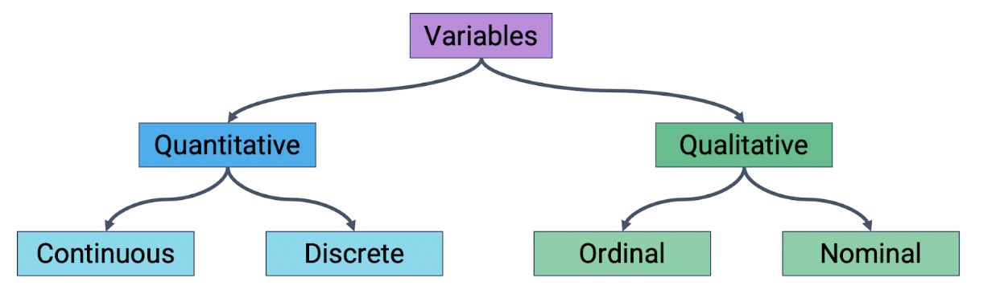

Choosing the Right Plot#
Choosing the right plot to make to visualize your data is crucial for making good data visualizations. The type of plot you should make should be closely informed by the types of variables you’re attempting to visualize. Here’s a quick visualization from UC Berkeley’s Data 100 on types of variables.

Here’s a quick description of each type of variable:
Quantitative Continuous: Numerical data that can take any value within a range. It has an infinite number of possible values within any given interval. Economic examples include GDP, CPI, inflation rate, etc.
Quantitative Discrete: Numerical variables that take on distinct, separate values and do not have intermediate values. Economic examples include number of unemployed individuals, quantity of cars produced in a month, number of employees in a company, etc.
Qualitative Ordinal: Qualitative ordinal variables represent categories with a meaningful order or ranking. The intervals between the categories are not uniform or well-defined. Economic examples include credit ratings, income classes (low, middle or high), the HDI, etc.
Qualitative Nominal: Qualitative nominal variables represent categories or groups with no inherent order or ranking. They are distinct and unrelated categories. Economic examples include the various types of industries, the names of various currencies, the names of countries in a trade agreement, etc.
Important Note: Be careful between quantitative discrete and qualitative ordinal variables in particular. For example, someone may argue that the HDI is a quantitative discrete variable. However, the difference between countries with HDIs of 0.9 vs 0.7 is not necessairly the same as the difference between countries with HDIs of 0.7 vs 0.5, something that we would expect from a quantitative variable. In other words, for the HDI, intervals between the categories are not necessarily uniform or well-defined. Another example of a confusing variable could be a child’s grade/year in school, where the difference between grade 12 and grade 8 is not necessairly the same as the difference between grade 8 and grade 4.
General Guide#
Below, we’ve included a general guide on which kind of plot to use when plotting different variable types. While we simply suggest which plots to make here, the next two subchapters elaborate on these types of plots in more detail, read those if you have any questions. This guide is by no means comprehensive, and ultimately the kind of plot you should make depends on the data you need to visualize. For example, if you need to visualize differences between countries, a geographic plot may be better than any of the plots below.
If you are plotting two quantitative continuous variables, a scatter plot or 2D KDE plot could be helpful.
If you are plotting a qualitative variable and a quantitative continuous variable, overlaid histograms or side-by-side box/violinplots could be helpful.
If you are plotting a qualitative variable and a quantitative discrete variable, a bar chart could be helpful.
If you are plotting time data, a line plot could be helpful.